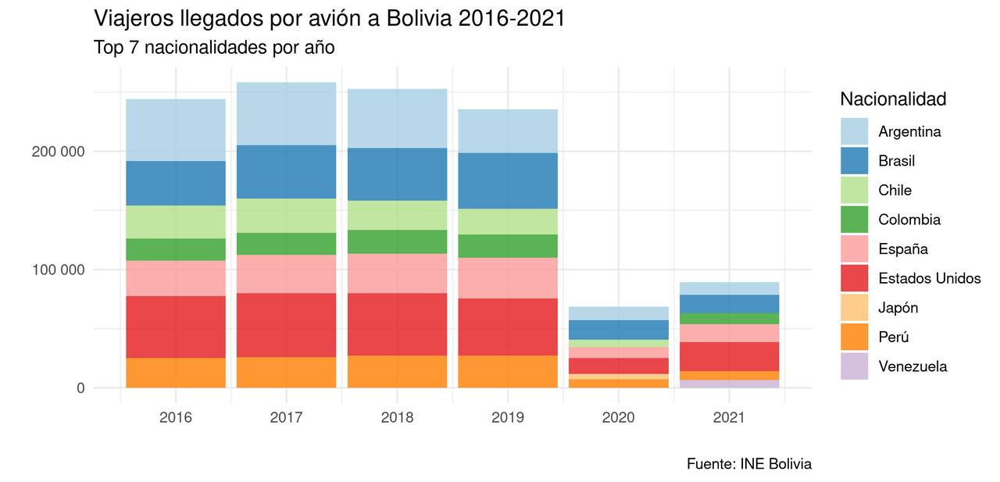
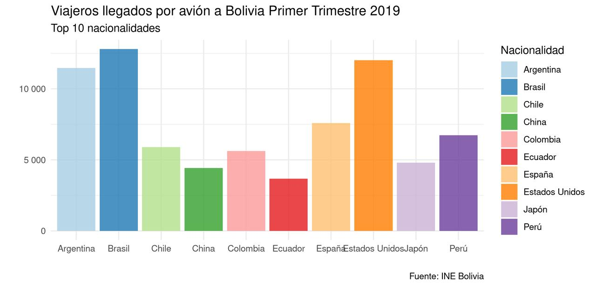

En este artículo, veremos cómo modificar la forma de una tabla, combinando
varias columnas en una sola o viceversa, veremos ejemplos en los que
utilizaremos la biblioteca tidyr con sus funciones gather(), spread(),
separate(), y unite().
Requisitos #
Por comodidad usamos la biblioteca pacman como gestor de paquetes.
# install.packages("pacman") Para instalar la biblioteca pacman
library(pacman) # Gestor de paquetes en R
p_load("readr") # Biblioteca para importar archivos csv
p_load("tidyr") # Biblioteca para manipular datos
p_load("ggplot2") # Biblioteca para graficar datos
p_load("dplyr") # Biblioteca para filtrar datos de la tabla
p_load("zoo") # Biblioteca para transformar fechas a trimestres
p_load("scales") # Biblioteca para dar formato de miles en el eje "y"
Recuerda, también puedes instalar y abrir las bibliotecas de manera tradicional,
por ejemplo con: install.packages("tidyr"), luego abrir la misma biblioteca
con library(tidyr).
Importando nuestros datos #
Los datos usados han sido descargados de
la base de datos del Instituto de Estadística de Bolivia (INE).
Una vez que se tiene los datos en nuestro equipo, se modifica para que se
encuentren en formato .csv y los importamos a nuestro entorno de R.
Puedes descargar los archivos usados en este artículo aquí.
Importamos el archivo .csv a la variable datos_turistas.
En la consola observamos lo siguiente:
Rows: 44 Columns: 169
── Column specification ───────────────────────────────────────────────────────────────
Delimiter: ","
chr (1): Nacionalidad
dbl (168): 31/01/08, 28/02/08, 31/03/08, 30/04/08, 31/05/08, 30/06/08, 31/07/08, 31...
ℹ Use `spec()` to retrieve the full column specification for this data.
ℹ Specify the column types or set `show_col_types = FALSE` to quiet this message.
Nuestra tabla tiene varias columnas correspondientes al acumulativo por mes, si
queremos graficar estos datos, ggplot() no nos será de mucha utilidad. Por
ello vamos a usar gather() para convertir las fechas de las columnas en datos
de una sola columna.
Si quieres explorar los datos manualmente puedes ejecutar la función
(View(datos_turistas)) en la consola.
¿Cómo usar la función gather()? #
La función gather() puede agrupar los nombres de las columnas en una sola, así
como se muestra en la siguiente animación.

En nuestro caso queremos hacer algo similar, agrupar las fechas en una columna
llamada Fecha.
# A tibble: 6 × 169
Nacionalidad `31/01/08` `28/02/08` `31/03/08` `30/04/08` `31/05/08` `30/06/08`
<chr> <dbl> <dbl> <dbl> <dbl> <dbl> <dbl>
1 Estados Unidos 2795 2365 2055 2258 2058 4141
2 Argentina 2304 1603 1780 869 2534 1293
3 Brasil 2996 3041 1499 3215 964 1128
4 Chile 1323 1195 1021 1115 754 1076
5 España 1050 875 721 727 744 670
6 Perú 1141 909 841 806 661 1438
# … with 162 more variables …
Usando la función gather() tenemos:
datos_turistas <-
gather(data = datos_turistas,
key = Fecha,
value = Turistas,
2:ncol(datos_turistas))
# ncol(tabla) Devuelve el número de columnas de tabla
Ejecutando head(datos_turistas), notamos que hemos obtenido lo deseado.
# A tibble: 6 × 3
Nacionalidad Fecha Turistas
<chr> <chr> <dbl>
1 Estados Unidos 31/01/08 2795
2 Argentina 31/01/08 2304
3 Brasil 31/01/08 2996
4 Chile 31/01/08 1323
5 España 31/01/08 1050
6 Perú 31/01/08 1141
gather(data, key, value, ...)
Función que es usada para agrupar columnas en dos nuevas columnas.
data: Dataframe o tabla que se va a modificar.key: Nombre de la nueva columna que va almacenar los nombres de la columnas que se van a agrupar.value: Nombre de la nueva columna que va contener los valores de la columnas que se van a agrupar....: Nombres o selección de columnas a agruparse, puedes usar los nombres de las columnas con la función concatenarc(). Por ejemplo,c(nombre_col1, nombre_col2...)o hacer la selección del complemento con!c(), también puedes utilizar como referencia el número de columna. Para hacer referencia a una serie sucesiva emplea:, algo como:n_col1:n_col2.
Separa una columna con separate() #
Para ejemplificar el operador separate() vamos a separar la columna Fecha en
las columnas día, mes y año.
datos_turistas <-
separate(datos_turistas,
col = Fecha,
into = c("día", "mes", "año"),
sep = "/",
remove = FALSE
)
Podemos observar en la consola.
> head(datos_turistas)
# A tibble: 6 × 6
Nacionalidad Fecha día mes año Turistas
<chr> <chr> <chr> <chr> <chr> <dbl>
1 Estados Unidos 31/01/08 31 01 08 2795
2 Argentina 31/01/08 31 01 08 2304
3 Brasil 31/01/08 31 01 08 2996
4 Chile 31/01/08 31 01 08 1323
5 España 31/01/08 31 01 08 1050
6 Perú 31/01/08 31 01 08 1141
separate(data, col, into, sep, remove)
Función que es usada para separar una columna en varias.
data: Dataframe o tabla que se va a modificar.col: Nombre de la columna que va a separarse.into: Nombres de la nuevas columnas que van a crearse a partir decol. Puedes usar la función concatenarc()para nombrar a las columnas.sep: Separador, un carácter que va a servir para identificar en donde se separa para generar las nuevas columnas. Puedes usar Regular Expressions.remove: Acepta valores booleanosTRUEyFALSE, por defecto esTRUE, si es igualTRUEborra la columna que se separa, enFALSEla mantiene.
Vamos a aprovechar los nuevos datos generados, para graficar el top de turistas que han visitado Bolivia en los años 2016-2021.
En el código abajo usamos muchas funciones de la biblioteca dplyr si quieres
aprender más sobre esa biblioteca lee
este artículo.
# Añadimos "20" al año y lo convertimos a variable entera.
datos_turistas$año <-
as.integer(paste("20", datos_turistas$año, sep = ""))
# Filtramos por año
datos_turistas_2016_2021 <-
datos_turistas %>%
filter(as.integer(año) >= 2016, na.rm =TRUE)
# Agrupando por Nacionalidad y año
datos_turistas_2016_2021 <-
datos_turistas_2016_2021 %>%
group_by(Nacionalidad, año) %>%
summarise(turistas_anuales = sum(Turistas))
# Extrayendo los top turistas visitantes de Bolivia
top_turistas_2016_2021 <-
datos_turistas_2016_2021 %>%
arrange(desc(turistas_anuales)) %>%
group_by(año) %>%
slice(1:7)
# Graficando con ggplot2
ggplot(data = top_turistas_2016_2021) +
geom_bar(
aes(x = año, y = turistas_anuales, fill = Nacionalidad),
stat = "identity",
alpha = 0.8
) +
theme_minimal() + scale_fill_brewer(palette = "Paired") +
scale_x_continuous(breaks = c(2016:2021)) +
scale_y_continuous(labels = comma_format(big.mark = " ")) +
labs(
x = "",
y = "",
fill = "Nacionalidad",
title = "Viajeros llegados por avión a Bolivia 2016-2021",
subtitle = "Top 7 nacionalidades por año",
caption = "Fuente: INE Bolivia"
)

Función unite() #
Unite es una función complementaria a separate() y hace lo contrario, une las
columnas en un sola. Vamos a usarlo para juntar las columnas de mes y año.
Observando en la consola:
> head(datos_turistas_trimestre)
# A tibble: 6 × 5
Nacionalidad Fecha día mes_año Turistas
<chr> <chr> <chr> <chr> <dbl>
1 Estados Unidos 31/01/08 31 01-2008 2795
2 Argentina 31/01/08 31 01-2008 2304
3 Brasil 31/01/08 31 01-2008 2996
4 Chile 31/01/08 31 01-2008 1323
5 España 31/01/08 31 01-2008 1050
6 Perú 31/01/08 31 01-2008 1141
unite(data, col, ..., sep, remove)
Función que une varias columnas en una.
data: Dataframe o tabla que se va a modificar.col: Nombre de la nueva columna que va a unir otras columnas....: Nombres de las nuevas columnas que van a juntarse encol. Puedes emplear la función concatenarc()para nombrar las columnas.sep: Separador, un carácter que va a servir para unir los valores de las columnas que se unen.remove: Acepta valores booleanosTRUEyFALSE. Si es igual aTRUE, borra las columnas que se unen, pero si esFALSE, las mantiene. Por defecto, su valor esTRUE.
Función spread() #
Esta función es la que complementa a la función gather(), y hace exactamente
lo contrario. Esparcir una columna en varias.
Antes de utilizar spread() vamos a agrupar nuestro datos en trimestres.
# Agrupamos los datos por trimestres
datos_turistas_trimestre <- datos_turistas_trimestre %>%
mutate(trimestre = as.yearqtr(mes_año, format ="%m-%Y")) %>%
group_by(Nacionalidad, trimestre) %>%
summarise(turistas_trimestre = sum(Turistas))
# También podemos utilizar la columna `Fecha` para transformar a trimestres, con el argumento `format=%d/%m/%y`
En la consola podemos ver
> head(datos_turistas_trimestre)
# A tibble: 6 × 3
# Groups: Nacionalidad [1]
Nacionalidad trimestre turistas_trimestre
<chr> <yearqtr> <dbl>
1 Alemania 2008 Q1 3318
2 Alemania 2008 Q2 1392
3 Alemania 2008 Q3 1458
4 Alemania 2008 Q4 1516
5 Alemania 2009 Q1 4008
6 Alemania 2009 Q2 1646
Ahora podemos usar spread(), para expandir los datos de la columna trimestre
en columnas independientes.
# Mostar en columnas los valores de trimestre
datos_turistas_trimestre <-
spread(
data = datos_turistas_trimestre,
key = trimestre,
value = turistas_trimestre)
Ahora observamos que nuestros datos se han esparcido, este formato es útil para visualización de datos en otros frameworks.
> head(datos_turistas_trimestre)
# A tibble: 6 × 57
# Groups: Nacionalidad [6]
Nacionalidad `2008 Q1` `2008 Q2` `2008 Q3` `2008 Q4` `2009 Q1` `2009 Q2` `2009 Q3`
<chr> <dbl> <dbl> <dbl> <dbl> <dbl> <dbl> <dbl>
1 Alemania 3318 1392 1458 1516 4008 1646 1924
2 Argentina 5687 4696 8537 6884 4734 4667 5810
3 Australia 988 1269 944 1384 980 771 1253
4 Austria 587 176 221 300 632 206 293
5 Bélgica 1029 246 784 602 1504 556 531
6 Brasil 7536 5307 7199 5693 4178 5941 9843
# … with 49 more variables …
spread(data, key, value)
Función que es usada para esparcir los datos de una columna como nombres de columnas.
data: Dataframe o tabla que se va a modificar.key: Nombre de la columna cuyos valores se van esparcir como los nombres de las nuevas columnas.value: Nombre de la columna cuyos valores van a convertirse en los nuevos valores de las nuevas columnas.
Aprovechemos estos datos para graficar el top de países que han visitado Bolivia en el primer trimestre del 2019.
top_turistas_trimestre_1_2019 <-
datos_turistas_trimestre %>%
select(Nacionalidad, `2019 Q1`) %>%
rename(trimestre1_2019= `2019 Q1`) %>%
arrange(desc(trimestre1_2019)) %>% as.data.frame() %>%
slice_head(n = 10)
Graficando
ggplot(data = top_turistas_trimestre_1_2019) +
geom_bar(aes(x=Nacionalidad, y=trimestre1_2019, fill=Nacionalidad), stat="identity", alpha = 0.8)+
theme_minimal() + scale_fill_brewer(palette = "Paired")+
scale_y_continuous(labels = comma_format(big.mark=" ")) +
labs(
x = "",
y = "",
fill = "Nacionalidad",
title = "Viajeros llegados por avión a Bolivia Primer Trimestre 2019",
subtitle = "Top 10 nacionalidades",
caption = "Fuente: INE Bolivia"
)
#p_unload(all) #Ejecute esta línea de comando para cerrar las bibliotecas abiertas con "pacman"

Otros detalles #
Las funciones mostradas en el artículo son las más usadas, y permiten un mejor manejo de datos en R. Te recomiendo revisar la documentación oficial si quieres aprender más.
En el caso de que quieras descargar el repositorio de este artículo puedes hacerlo aquí.